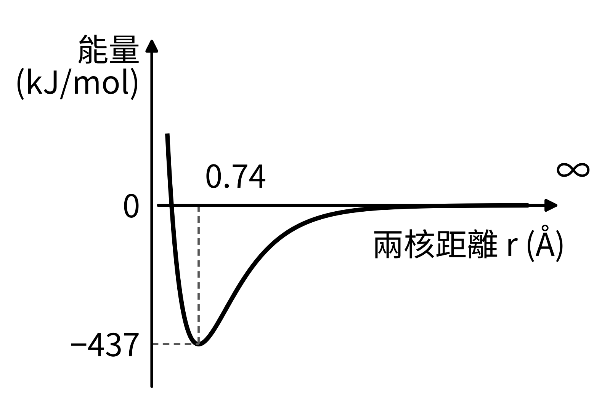
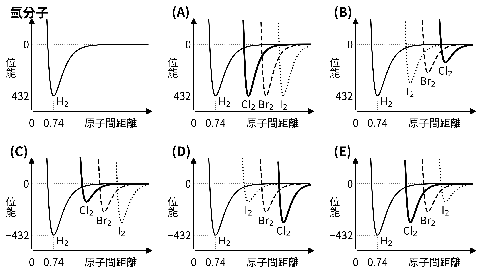

基礎題
下列有關 σ 鍵與 π 鍵的敘述，何者錯誤？
- (A) σ 鍵是兩軌域沿著鍵軸以頭對頭的方式重疊而成
- (B) 兩個 s 軌域重疊時只能形成 σ 鍵
- (C) N2 分子中有 1 個 σ 鍵與 2 個 π 鍵
- (D) 乙烯的碳－碳雙鍵是由 2 個 π 鍵組成
- (E) 一般而言，π 鍵的重疊程度較小，比 σ 鍵容易斷裂
看答案與詳解
答案：(D)
(B) ✔ s 軌域是球形，只能頭對頭重疊成 σ 鍵。
(C) ✔ N≡N 參鍵＝1σ＋2π。
(D) ✘ 雙鍵＝1σ＋1π；兩原子間第一個鍵一定是 σ 鍵，不會有 2 個 π 鍵而沒有 σ 鍵。
(E) ✔ π 鍵是側面重疊，重疊程度小、較弱，反應時先斷。
兩個氫原子由相距很遠逐漸靠近而形成 H2 分子（鍵長 74 pm、鍵能 436 kJ/mol）。下列有關此過程的敘述，何者正確？
- (A) 核間距離大於 74 pm 時，兩原子間的斥力大於引力
- (B) 核間距離為 74 pm 時位能最低，此時 1 mol H2 的位能比 2 mol 相距很遠的氫原子低 436 kJ
- (C) 2H(g) → H2(g) 為吸熱反應
- (D) 核間距離由 74 pm 再縮短時，位能繼續下降
- (E) 若另一種雙原子分子的位能曲線谷底更深，表示它的鍵長一定更短
看答案與詳解
答案：(B)
(B) ✔ 位能最低點對應的距離就是鍵長 74 pm；最低點與 0（兩原子相距無限遠）的能量差就是鍵能 436 kJ/mol。
(C) ✘ 成鍵放熱：2H(g) → H2(g) ΔH＝－436 kJ。
(D) ✘ 小於鍵長後兩原子核互相排斥，位能急遽上升。
(E) ✘ 谷愈深代表鍵能愈大；鍵長要看谷底的橫坐標，愈靠左才愈短。
下列有關化學鍵的敘述，何者錯誤？
- (A) 兩個 H 原子間形成化學鍵時，其能量降低
- (B) 兩個 F 原子間形成 F+F− 分子
- (C) 由鍵結原子間共用價電子對而結合的化學鍵，稱為共價鍵
- (D) 核與核之間的作用力及電子與電子之間的作用力，均會減少化學鍵之穩定性
- (E) 破壞化學鍵需提供能量
看答案與詳解
答案：(B)
(B) ✘ 兩個 F 原子吸引電子的能力相同，只會共用一對電子形成 F－F 共價鍵，不會一個變 F+、一個變 F−。
(C) ✔ 這就是共價鍵的定義。
(D) ✔ 核與核、電子與電子之間都是斥力，會降低穩定性；使鍵穩定的是核對電子的引力。
(E) ✔ 斷鍵一定吸熱。
下列有關配位共價鍵的敘述，何者正確？
- (A) 配位共價鍵的共用電子對，是由兩個原子各提供一個電子而來
- (B) NH4+ 中以配位方式形成的那一個 N－H 鍵，鍵長比其他三個 N－H 鍵長
- (C) H3O+ 是由 H2O 的 O 原子提供孤對電子給 H+ 所形成
- (D) BF3 與 NH3 結合成 F3B－NH3 時，由 B 提供電子對、N 提供空軌域
- (E) CH4 的 C 原子上有孤對電子，可以和 H+ 形成配位共價鍵
看答案與詳解
答案：(C)
(A) ✘ 兩個原子各提供一個電子是一般的共價鍵。
(B) ✘ 配位共價鍵形成後與一般共價鍵沒有差別，NH4+ 的四個 N－H 鍵完全相同。
(C) ✔ H2O 的 O 有孤對電子，H+ 有空的 1s 軌域：H2O＋H+ → H3O+。
(D) ✘ 說反了：N 有孤對電子、提供電子對；B 只有 6 個價電子、提供空軌域。
(E) ✘ CH4 的 C 用 4 個價電子形成 4 個 C－H 鍵，沒有孤對電子。
丙烯醛 CH2＝CH－CHO 分子中，σ 鍵與 π 鍵的數目依序為多少？
- (A) 6、2
- (B) 7、2
- (C) 8、2
- (D) 7、1
- (E) 5、4
看答案與詳解
答案：(B)
σ 鍵：C－H 4 個＋C＝C 中 1 個＋C－C 1 個＋C＝O 中 1 個＝7 個（鏈狀分子：原子數 8－1＝7）。
π 鍵：C＝C 1 個＋C＝O 1 個＝2 個。
下列分子中，何者所含的 π 鍵數目最多？
- (A) C2H4
- (B) CH3COOH
- (C) CO2
- (D) N≡C－C≡N
- (E) C2H2
看答案與詳解
答案：(D)
(A) H2C＝CH2：1 個。
(B) CH3COOH 只有一個 C＝O：1 個。
(C) O＝C＝O：2 個。
(D) N≡C－C≡N 有兩個參鍵：4 個，最多。
(E) H－C≡C－H：2 個。
已知碳－碳鍵的鍵能：C－C 為 346 kJ/mol、C＝C 為 614 kJ/mol、C≡C 為 839 kJ/mol。下列敘述何者正確？
- (A) 碳－碳鍵長：C≡C＞C＝C＞C－C
- (B) 由數據可知 C＝C 中的 π 鍵比 σ 鍵強
- (C) 由數據估計，C＝C 中 π 鍵的鍵能約為 268 kJ/mol，比 σ 鍵弱
- (D) 打斷 1 mol 的 C≡C 鍵會放出 839 kJ 的能量
- (E) 兩原子間的鍵級愈大，鍵能愈小
看答案與詳解
答案：(C)
(B) ✘、(C) ✔ C＝C＝1σ＋1π，σ 鍵約 346 kJ/mol，π 鍵約 614－346＝268 kJ/mol，π 鍵較弱。
(D) ✘ 斷鍵要吸收能量，不是放出。
(E) ✘ 鍵級愈大，鍵能愈大。
關於 H－F、H－Cl、H－Br、H－I 四種鍵的比較，下列敘述何者正確？
- (A) 鹵素的原子半徑愈大，鍵長愈長、鍵能愈小
- (B) 鍵長最長的是 H－F
- (C) 鍵能最大的是 H－I
- (D) 四種鍵都含有 1 個 σ 鍵與 1 個 π 鍵
- (E) 受熱時最不容易分解成元素的是 HI
看答案與詳解
答案：(A)
(A) ✔ 半徑愈大，鍵長愈長、鍵能愈小。
(B) ✘ 鍵長最長的是 H－I。
(C) ✘ 鍵能最大的是鍵長最短的 H－F。
(D) ✘ 都是單鍵，只有 1 個 σ 鍵；H 原子永遠只有 σ 鍵。
(E) ✘ H－I 鍵能最小，受熱最容易分解。
臭氧 O3 分子中兩個氧－氧鍵的鍵長都是 128 pm，介於 O－O 單鍵（148 pm）與 O＝O 雙鍵（121 pm）之間。下列敘述何者正確？
- (A) O3 分子不停地在 O＝O－O 與 O－O＝O 兩種結構之間快速變換
- (B) O3 的兩個共振結構中，三個氧原子的排列位置不同
- (C) O3 中的 π 電子固定在某兩個氧原子之間
- (D) O3 的氧－氧鍵平均鍵級為 1.5
- (E) O3 的氧－氧鍵能比 O2 的氧－氧鍵能大
看答案與詳解
答案：(D)
(B) ✘ 共振結構之間只有電子的位置不同，原子位置不變。
(C) ✘ π 電子分布在三個氧原子之間（非定域）。
(D) ✔ 平均鍵級＝(1＋2)／2＝1.5，所以鍵長介於單鍵與雙鍵之間。
(E) ✘ O2 的鍵級為 2，大於 O3 的 1.5，O2 的鍵能較大。
下列有關晶體結構的敘述，何者正確？
- (A) 碳與矽同一族，則金剛石與矽晶體的結構類似
- (B) 碳與矽同一族，則乾冰（CO2）與石英（SiO2）的晶體結構類似
- (C) 石墨與金剛石為碳的同素異形體，則其晶體結構類似
- (D) 石墨與銅均可導電，則石墨與銅的晶體結構類似
- (E) 鑽石（金剛石）與玻璃皆透明無色，則其晶體結構類似
看答案與詳解
答案：(A)
(B) ✘ 乾冰是分子晶體，石英是網狀固體。
(C) ✘ 石墨是層狀結構，金剛石是立體網狀。
(D) ✘ 石墨是以共價鍵結合的層狀固體，銅是金屬晶體。
(E) ✘ 玻璃是非晶形固體，原子排列不規則。
同族、同素、性質相似都不保證結構相同。
乾冰固態結構中二氧化碳分子規則排列，昇華為氣態時，分子呈散亂狀，分子間距離變大，但單一分子結構不變，碳和氧的化學鍵沒有破壞。則下列何種物質熔化時也沒有破壞化學鍵？
- (A) SiO2
- (B) Si
- (C) H2O
- (D) NaCl
- (E) Zn
看答案與詳解
答案：(C)
(C) ✔ H2O 是分子物質，冰熔化時 O－H 共價鍵不變。
(A)(B) ✘ SiO2、Si 是網狀固體，熔化要破壞共價鍵。
(D) ✘ NaCl 熔化要破壞離子鍵。
(E) ✘ Zn 熔化要破壞部分金屬鍵。
關於石英（SiO2）與乾冰固體（CO2）的敘述，下列何者正確？
- (A) 乾冰具有昇華的特性，石英則具有半導體的特性
- (B) 兩者晶體結構相似，均為三度空間共價網狀固體
- (C) 兩者結構中，碳與矽原子鍵結的氧原子數相同
- (D) CO2 為分子式，SiO2 不為分子式
- (E) 兩者具有高熔點，且硬度大
看答案與詳解
答案：(D)
(B) ✘ 乾冰是 CO2 分子堆積成的分子固體，只有石英是網狀固體。
(C) ✘ CO2 中每個 C 接 2 個 O；石英中每個 Si 接 4 個 O。
(D) ✔ CO2 有獨立分子，是分子式；SiO2 只表示 Si：O＝1：2，是實驗式。
(E) ✘ 乾冰熔點低、質軟。
下列各組物質中，其化學鍵相同的是：
- (A) HCl 與 NaCl
- (B) Si 和 Sn
- (C) Na 和 NH3
- (D) CaO 和 Ca
- (E) Si 和 HI
看答案與詳解
答案：(E)
(B) ✘ Si 是網狀固體（共價鍵）、Sn 是金屬（金屬鍵）。
(C) ✘ Na 金屬鍵、NH3 共價鍵。
(D) ✘ CaO 離子鍵、Ca 金屬鍵。
(E) ✔ Si 原子之間、H 與 I 之間都是共價鍵。
下列有關 H2O、CO2、SiO2、MgO、Ca、Si、Br2 等 7 種物質，其在常溫常壓下的性質與構造的敘述，何者正確？
- (A) 只有 1 種物質為液體
- (B) 只有 2 種物質為氣體
- (C) 只有 3 種物質為固體
- (D) 只有 2 種物質為網狀固體
- (E) C 與 Si 同族，可推測 SiO2 中，每個 Si 只連接 2 個 O
看答案與詳解
答案：(D)
(D) ✔ 網狀固體是 SiO2 與 Si 共 2 種；MgO 是離子固體、Ca 是金屬。
(E) ✘ SiO2 中每個 Si 以單鍵接 4 個 O、每個 O 接 2 個 Si，與 CO2 分子的結構完全不同。
進階題
含有碳原子－碳原子雙鍵及參鍵的化合物很早就被化學家發現，然而含有矽原子－矽原子雙鍵及參鍵的化合物卻遲至 1981 年和 2004 年才分別被發現。其最有可能原因為何？
- (A) 矽原子的電負度較碳原子的電負度小
- (B) 矽原子的電子親和力較碳原子的電子親和力強
- (C) 矽原子的第一游離能較碳原子的第一游離能小
- (D) 矽原子－矽原子的 π 鍵較碳原子－碳原子的 π 鍵弱
看答案與詳解
答案：(D)
(D) ✔ Si 是第三週期元素，原子半徑比 C 大、Si－Si 鍵較長，兩個 3p 軌域肩並肩重疊的程度很小，π 鍵很弱，所以含 Si＝Si、Si≡Si 的化合物很不穩定，直到近代才被製得。
(A)(B)(C) ✘ 這些是單一原子得失電子能力的比較，與 π 鍵的重疊程度無關，不能說明為什麼 Si 不易形成多鍵。
右圖為兩相同原子由無窮遠處相靠近時，其淨能量變化之圖形，則：

- (A) 兩核距離 r＞0.74 Å 時，其間之作用力為吸力＜斥力
- (B) 此單一原子半徑為 0.53 Å，而 0.74＞0.53，故知其以單原子分子形式存在
- (C) 437 kJ/mol 稱為該分子物質之鍵能
- (D) 此化學鍵是由兩個原子的 p 軌域重疊而成
看答案與詳解
答案：(C)
(A) ✘ r＞0.74 Å 時靠近會使能量下降，引力大於斥力。
(B) ✘ 0.74 Å 是兩核間的距離（鍵長）；曲線有明顯的谷，表示會結合成雙原子分子。
(C) ✔ 谷底與 0 的能量差 437 kJ/mol 就是鍵能。
(D) ✘ 鍵長 0.74 Å、鍵能 437 kJ/mol 是 H2，由兩個 1s 軌域重疊而成。
寫出下列各分子中 σ 鍵與 π 鍵的數目。
(1) 氰化氫 HCN
(2) 乙醛 CH3CHO
(3) 1,3-丁二烯 CH2＝CH－CH＝CH2
(4) 苯乙烯 C6H5－CH＝CH2
看答案與詳解
答案：(1) σ 2、π 2 (2) σ 6、π 1 (3) σ 9、π 2 (4) σ 16、π 4
(1) H－C≡N：σ＝3－1＝2；參鍵 → π＝2。
(2) CH3CHO：7 個原子 → σ＝6；C＝O → π＝1。
(3) CH2＝CH－CH＝CH2：10 個原子 → σ＝9；兩個 C＝C → π＝2。
(4) C6H5－CH＝CH2：16 個原子、1 個環 → σ＝16－1＋1＝16（C－H 8 個、C－C 8 個）；苯環 3 個＋C＝C 1 個 → π＝4。
C60 分子中，每個碳原子都與相鄰的 3 個碳原子鍵結，且每個碳原子都符合八隅體。一個 C60 分子有幾個 π 鍵？
- (A) 60
- (B) 30
- (C) 20
- (D) 0
看答案與詳解
答案：(B)
60 個 C 共剩 60 個電子，兩兩配對形成 π 鍵 → 60÷2＝30 個 π 鍵。
（σ 鍵共 60×3÷2＝90 個。）
下列有關鍵能的比較，何者正確？
- (A) H2＞F2＞Cl2
- (B) H2＞Cl2＞F2
- (C) Cl2＞F2＞H2
- (D) F2＞Cl2＞H2
看答案與詳解
答案：(B)
F 雖然比 Cl 小，但 F－F 鍵很短，兩個 F 原子上各 3 對孤對電子靠得很近、互相排斥，使 F－F 鍵反而很弱（約 158 kJ/mol），小於 Cl－Cl（243 kJ/mol）。
鍵能：H2＞Cl2＞F2，選 (B)。
注意：H－X 鍵符合「半徑愈小鍵能愈大」（H－F 最大），但鹵素分子 X2 的鍵能是 Cl2＞Br2＞F2＞I2，F2 是例外。
依八隅體法則畫出路易斯結構，下列哪種粒子不具有共振結構？
- (A) CO32−
- (B) SO32−
- (C) NO2−
- (D) NO3−
看答案與詳解
答案：(B)
(A) CO32−：C＝O 可在三個 O 之一，3 個共振結構。
(B) SO32−：依八隅體畫法，S 以 3 個單鍵接 3 個 O，S 上還有 1 對孤對電子，沒有多鍵可以換位置 → 不具共振。
(C) NO2−：N＝O 可在左或右，2 個共振結構。
(D) NO3−：N＝O 可在三個 O 之一，3 個共振結構。
比較下列三種粒子中氮－氧鍵的鍵長：(甲) NO2− (乙) NO3− (丙) 羥胺 H2N－OH，由長到短的順序何者正確？
- (A) 甲＞乙＞丙
- (B) 乙＞甲＞丙
- (C) 丙＞甲＞乙
- (D) 丙＞乙＞甲
- (E) 乙＞丙＞甲
看答案與詳解
答案：(D)
(甲) NO2−：2 個共振結構，(1＋2)／2＝1.5。
(乙) NO3−：3 個共振結構，(1＋1＋2)／3＝4/3。
(丙) H2N－OH：N－O 單鍵，鍵級 1。
鍵級愈小鍵長愈長：丙＞乙＞甲。
有六種物質：(A) 石墨、(B) 鑽石、(C) 苯（C6H6）、(D) SO3、(E) O3、(F) NF3。
(1) 將 (A) 石墨、(B) 鑽石及 (C) 苯之碳－碳鍵鍵長，由長至短排列，並說明理由。
(2) 以上六種物質之中，具有共振結構的有哪些？（SO3 依八隅體法則；以代號作答）
看答案與詳解
答案：(1) B＞A＞C (2) A、C、D、E
(2) 多鍵可以換到等價位置者有共振：石墨（層內 π 電子非定域）、苯、SO3（S＝O 可在三個 O 之一）、O3（O＝O 可在左或右）。鑽石與 NF3 全是單鍵，沒有共振。
石墨中每個碳原子與同一層的 3 個碳原子以 σ 鍵相連；金剛石中每個碳原子與 4 個碳原子以 σ 鍵相連。12 克石墨與 12 克金剛石中，碳－碳 σ 鍵的莫耳數比（石墨：金剛石）為何？（C＝12）
- (A) 1：1
- (B) 3：2
- (C) 3：4
- (D) 3：8
- (E) 2：3
看答案與詳解
答案：(C)
石墨：每個 C 接 3 個 C，每個鍵由 2 個 C 共用 → 每個 C 平均擁有 3×1/2＝1.5 個 σ 鍵 → 1.5 mol。
金剛石：每個 C 接 4 個 C → 每個 C 平均擁有 4×1/2＝2 個 σ 鍵 → 2 mol。
比值＝1.5：2＝3：4。
下列各組物質發生變化時，所破壞的鍵（或作用力）型式相同的是：
- (A) 食鹽與葡萄糖的熔化
- (B) 鋁與硫的熔化
- (C) 碘與乾冰的昇華
- (D) 二氧化矽與二氧化碳的熔化
- (E) CO2 與金剛石的熔化
看答案與詳解
答案：(C)
(A) ✘ 離子鍵／分子間作用力。
(B) ✘ 金屬鍵／分子間作用力。
(C) ✔ 碘與乾冰都是分子固體，昇華都只克服分子間作用力。
(D)(E) ✘ 網狀固體要破壞共價鍵；CO2 只克服分子間作用力。
下列有關化學鍵與晶體結構的敘述，何者正確？
- (A) 共價鍵結合的物質，在固態時一定無法導電
- (B) 金屬鍵是以金屬原子浸在電子海中來描述
- (C) 非金屬元素之間以共價鍵組成的化合物，稱為共價分子化合物
- (D) HCl 氣體溶於水會被破壞共價鍵
- (E) 凡是離子晶體一定含有金屬離子
看答案與詳解
答案：(D)
(B) ✘ 浸在電子海中的是金屬「陽離子」。
(C) ✘ 也可能是網狀固體，如 SiO2、SiC。
(D) ✔ HCl 溶於水解離成 H+ 與 Cl−，H－Cl 共價鍵被破壞。
(E) ✘ NH4Cl 是離子晶體，但不含金屬離子。
甲為空氣中含量最多的氣體；乙為半導體的主要元素；丙與富勒烯是同素異形體，為透明無色晶體；丁為構成石灰岩的主要成份。下列有關上述四種物質之敘述，何者錯誤？
- (A) 乙與丙皆為網狀共價固體
- (B) 甲為雙原子分子
- (C) 丁為含有離子鍵的共價化合物
- (D) 乙的氧化物為網狀共價固體
- (E) 丁加熱可分解出 CO2
看答案與詳解
答案：(C)
(A) ✔ Si 與金剛石都是網狀固體。
(B) ✔ N2。
(C) ✘ CaCO3 由 Ca2+ 與 CO32− 以離子鍵結合，是「含有共價鍵的離子化合物」，說反了。
(D) ✔ SiO2 是網狀固體。
(E) ✔ CaCO3 → CaO＋CO2。
下列有關離子晶體和共價網狀固體的敘述，哪些正確？（多選）
- (A) 共價網狀固體在固態時皆不具有導電性
- (B) 離子晶體不具延性與展性
- (C) 離子晶體質地硬卻易碎
- (D) 共價網狀固體的導熱性不良
- (E) 離子晶體屬於電解質，溶於水依靠自由電子而導電
看答案與詳解
答案：(B)(C)
(B) ✔ 離子晶體受力後離子層錯位，同性離子相斥而裂開，沒有延展性。
(C) ✔ 離子鍵強所以硬，但一錯位就碎裂，硬而脆。
(D) ✘ 金剛石的導熱性非常好。
(E) ✘ 離子晶體溶於水是靠可移動的「離子」導電。
下列有關分子化合物、網狀固體及金屬固體的相關敘述，何者正確？（多選）
- (A) 分子化合物及網狀固體的原子間是以共價鍵鍵結
- (B) 分子化合物及網狀固體的熔、沸點取決於分子間作用力，金屬固體的熔、沸點取決於金屬鍵的強度
- (C) 一般而言，分子化合物的熔、沸點低於金屬固體，這是因為共價鍵強度低於金屬鍵
- (D) 表示網狀固體及金屬固體的化學式是簡式
- (E) 分子化合物不導電，金屬固體可以導電，網狀固體導電度介於兩者之間
看答案與詳解
答案：(A)(D)
(B) ✘ 網狀固體沒有分子，熔化要破壞共價鍵。
(C) ✘ 分子化合物熔、沸點低是因為分子間作用力弱，與共價鍵強度無關。
(D) ✔ 網狀固體與金屬都沒有獨立的分子，只能用簡式表示。
(E) ✘ 網狀固體多半不導電（金剛石、SiO2），石墨則可導電，不能一概而論。
大考／素養題
下列雙原子分子的化學鍵能何者最大？
- (A) CO
- (B) O2
- (C) N2
- (D) F2
看答案與詳解
答案：(A)
CO 與 N2 的電子數相同，但 C≡O 是極性鍵，鍵更強：C≡O 約 1072 kJ/mol＞N≡N 約 945 kJ/mol。
CO 是鍵能最大的雙原子分子。
下列有關 NaCl、Na、Cl2、SiO2 四種物質熔點高低的排列順序，何者正確？
- (A) SiO2＞NaCl＞Na＞Cl2
- (B) NaCl＞SiO2＞Na＞Cl2
- (C) SiO2＞Na＞NaCl＞Cl2
- (D) Na＞NaCl＞Cl2＞SiO2
看答案與詳解
答案：(A)
下列化學鍵，哪一個最短？
- (A) C－C
- (B) O－H
- (C) C＝O
- (D) C≡C
- (E) C≡N
看答案與詳解
答案：(B)
H 在第一週期，半徑最小，含 H 的鍵最短：O－H 約 96 pm。
其餘都是兩個第二週期原子之間的鍵：C－C 154 pm、C＝O 約 120 pm、C≡C 120 pm、C≡N 116 pm，即使是參鍵也比 O－H 長。
比較下列物質的 π 電子數，將答案由大到小排列：2-丁烯、1,3-丁二烯、丁烯二酸。
看答案與詳解
答案：丁烯二酸＞1,3-丁二烯＞2-丁烯
丁烯二酸 HOOC－CH＝CH－COOH：1 個 C＝C＋2 個 C＝O → 3 個 π 鍵，6 個 π 電子。
1,3-丁二烯 CH2＝CH－CH＝CH2：2 個 π 鍵，4 個 π 電子。
2-丁烯 CH3－CH＝CH－CH3：1 個 π 鍵，2 個 π 電子。
下列物質：銅、水、食鹽、醋酸酐、石英等，受其鍵結與作用力的影響，具有明顯的形態和性質的差異。下列有關這些物質的敘述，哪些正確？（多選）
- (A) 銅金屬可視為銅陽離子浸於電子海中
- (B) 石英屬於共價網狀固體，是由共價鍵結合而成
- (C) 食鹽屬於離子化合物，是由陰、陽離子間的靜電吸引力結合而成
- (D) 水分子內有共價鍵，分子間有氫鍵但無凡得瓦力
- (E) 醋酸酐分子內有共價鍵，分子間有氫鍵及凡得瓦力
看答案與詳解
答案：(A)(B)(C)
(B) ✔ 石英 SiO2 是網狀固體，原子間全以共價鍵連接。
(C) ✔ NaCl 是離子化合物。
(D) ✘ 水分子間有氫鍵，也有凡得瓦力。
(E) ✘ 醋酸酐 (CH3CO)2O 沒有接在 O 上的 H，分子間沒有氫鍵。
【閱讀題】石墨烯是從石墨材料中剝離出來的超薄石墨，並且只有一層原子厚度，是一種二維晶體。2004 年，英國曼徹斯特大學物理學家安德烈·蓋姆和康斯坦丁·諾沃肖洛夫，一開始先打磨石墨，幾星期後只能得到厚度 10 微米的石墨薄片；後來他們用膠帶黏住石墨薄片的兩側，撕開膠帶，石墨就一分為二。不斷重複這一過程，石墨薄片就越來越薄，成功從石墨中分離出石墨烯，證實它可以單獨存在，兩人也因此共同獲得 2010 年諾貝爾物理學獎。
石墨烯是碳原子的一種特別排列方式，是由單層的碳原子以六角環組成蜂巢般的平面結構。石墨烯不是唯一的二維材料，氮化硼、雙硫屬化合物和拓撲絕緣體等也都是很有希望的新材料，對石墨烯生長的研究將會對二維材料的發展提供寶貴的經驗。
從結構來看，石墨烯的比表面積高（2,630 m2g−1）且擁有豐富的中孔結構，應用在電極材料上，中孔結構有助於電解液離子快速遷移至石墨烯表面，並利用比表面積儲存電荷，這樣的導電電極可以用作製造「超級電容器」。
根據本文內容，下列敘述何者正確？
- (A) 能夠以類似石墨烯的方式，以膠帶撕出單層鑽石膜
- (B) 石墨、石墨烯及鑽石互為同分異構物
- (C) 石墨烯是約為 10 微米的石墨薄片
- (D) 石墨烯的層跟層之間以作用力連接
- (E) 氮化硼也可以形成跟石墨相似的結構
看答案與詳解
答案：(E)
(B) ✘ 三者是碳的同素異形體，不是同分異構物。
(C) ✘ 10 微米是打磨得到的石墨薄片；石墨烯只有一層原子厚。
(D) ✘ 石墨烯只有單層，層與層以作用力連接的是石墨。
(E) ✔ 文中指出氮化硼也是二維材料，可形成與石墨相似的層狀結構。
附圖左上為氫原子結合成氫分子的位能變化圖。當二個氫原子逐漸接近時，電子與原子核相互吸引，導致其位能逐漸降低，直至位能最低時（－432 kJ/mol），形成最穩定的氫分子（氫分子的鍵能即為 432 kJ/mol，而此時氫原子核間的距離 0.74 埃，即為氫分子的鍵長）。當二個氫原子更接近時，因原子核間的斥力大增，其位能亦急速增高。下列有關 Cl2、Br2、I2 等分子形成過程中，位能變化的相對關係圖，何者正確？

- (A) 圖 (A)
- (B) 圖 (B)
- (C) 圖 (C)
- (D) 圖 (D)
- (E) 圖 (E)
看答案與詳解
答案：(E)
鍵長：原子半徑 Cl＜Br＜I，谷底由左而右依序為 Cl2、Br2、I2，而且都在 H2 的右邊 → 刪去 (B)(D)。
鍵能：原子愈大、鍵愈長，鍵能愈小，Cl－Cl（243）＞Br－Br（193）＞I－I（151 kJ/mol），都小於 H－H（432）→ 谷愈往右愈淺，刪去 (A)（一樣深）與 (C)（愈右愈深）。
只有 (E) 符合。
實驗測得幾種碳－氧鍵的鍵長如下：甲醇 CH3OH 的 C－O 鍵為 143 pm；甲醛 HCHO 的 C＝O 鍵為 121 pm；甲酸 HCOOH 分子中的兩個碳－氧鍵分別為 120 pm 與 134 pm；甲酸鈉晶體中，甲酸根 HCOO− 的兩個碳－氧鍵都是 127 pm。
(1) 甲酸根中碳－氧鍵的平均鍵級為多少？
(2) 說明為何甲酸根的兩個碳－氧鍵等長，而甲酸分子的兩個碳－氧鍵不等長。
(3) 一個甲酸分子中有幾個 σ 鍵、幾個 π 鍵？
(4) 碳酸根 CO32− 的碳－氧鍵長應落在下列哪一個範圍？並說明理由。(a) 小於 121 pm (b) 121～127 pm (c) 127～143 pm
看答案與詳解
答案：(1) 1.5 (2) 甲酸根的兩個 O 等價，有共振，π 電子非定域；甲酸有一個 O 接 H，雙鍵位置固定 (3) σ 鍵 4 個、π 鍵 1 個 (4) (c)，鍵級 4/3 介於 1 與 1.5 之間
(2) 甲酸根的兩個 O 等價，π 電子非定域、平均分布在兩個碳－氧鍵上，所以兩鍵等長（127 pm 介於 121 與 143 pm 之間）。甲酸分子中有一個 O 接了 H，C＝O 雙鍵固定在另一個 O 上，所以一個接近雙鍵（120 pm）、一個接近單鍵（134 pm）。
(3) H－C(＝O)－O－H：σ 鍵有 C－H、C＝O 中 1 個、C－O、O－H 共 4 個；π 鍵 1 個。
(4) CO32− 的平均鍵級＝(1＋1＋2)／3＝4/3，比甲酸根的 1.5 小、比單鍵的 1 大，鍵長應介於 127 與 143 pm 之間，選 (c)。